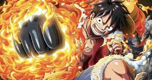
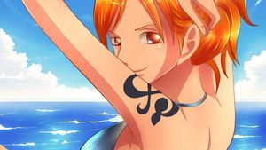
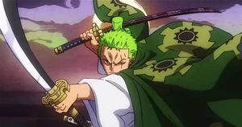
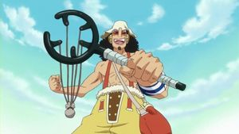
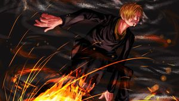
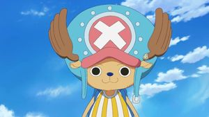
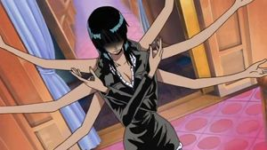
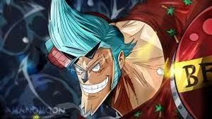
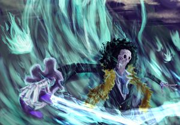
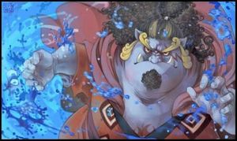

Mugiwaras
Los mugiwaras (de la palabra mugiwara - 麦わら - "sombrero de paja" en japonés) son la tripulación protagonista de esta aventura. El nombre se debe al característico sombrero de paja que usa su capitán, Monkey D. Luffy.
Luffy
- Rol en la tripulación: Capitán.
- Fecha de nacimiento: 5 de mayo.
- Apodo: Sombrero de paja
- Recompensa: 3.000.000.000

- Luffy es un joven que de chico comió la fruta Gomu Gomu, lo cual le permite estirarse como si fuese de goma. Su sueño es recorrer todo el mundo y convertirse en el rey de los piratas.
Nami
- Rol en la tripulación: Navegante.
- Fecha de nacimiento: 3 de junio.
- Apodo: Gata Ladrona
- Recompensa: 66.000.000
- Originaria de la villa Cocoyasi en el East Blue, Nami es una joven ladrona que tiene como objetivo cartografiar todo el mundo.
Zoro
- Rol en la tripulación: Combatiente.
- Fecha de nacimiento: 11 de noviembre.
- Apodo: Cazador de Piratas
- Recompensa: 320.000.000
- Debido a una promesa hecha de pequeño, Zoro tiene un solo objetivo en su vida: convertirse en el mejor espadachín del mundo.
Usopp
- Rol en la tripulación: Francotirador.
- Fecha de nacimiento: 1 de abril.
- Apodo: Sogeking, God Usopp
- Recompensa: 200.000.000
- Siguiendo los pasos de su padre, el pirata Yasopp, Usopp se embarca en esta tripulación buscando vivir grandes aventuras y convertirse en un gran guerrero de los mares.
Sanji
- Rol en la tripulación: Cocinero.
- Fecha de nacimiento: 2 de marzo.
- Apodo: Pierna Negra
- Recompensa: 330.000.000
- Aferrado a la creencia de que existe un All Blue (mar donde se encuentran peces de todas partes del mundo), este cocinero acompañará a nuestro protagonista para comprobar si la leyenda es cierta con sus propios ojos
Tony Tony Chopper
- Rol en la tripulación: Médico.
- Fecha de nacimiento: 24 de diciembre.
- Apodo: Amante del algodón de azucar
- Recompensa: 100
- Un reno que comió una fruta Hito Hito, la cual le permite convertirse en humano. Motivado por su maestro, el doctor Hiruluk, este pequeño animal acompañará a nuestros amigos brindando soporte como médico.
Nico Robin
- Rol en la tripulación: Arqueóloga.
- Fecha de nacimiento: 6 de febrero.
- Apodo: Niña Demonio
- Recompensa: 130.000.000
- La última sobreviviente del clan Ohara, grupo dedicado al estudio de escrituras prohibidas por el gobierno mundial. Esto la convierte en una criminal de máxima peligrosidad para dicho gobierno, pero no la detendrá en su búsqueda de la verdad para conocer lo que realmente pasó durante "el siglo perdido".
Franky
- Rol en la tripulación: Carpintero.
- Fecha de nacimiento: 9 de marzo.
- Apodo: Hombre de hierro
- Recompensa: 94.000.000
- Un cyborg (mitad hombre - mitad máquina) experto en la construcción de barcos, acompañará a nuestro protagonista para ver con sus propios ojos como el barco que contruyó navega hasta el fin del mundo.
Brook
- Rol en la tripulación: Músico.
- Fecha de nacimiento: 3 de abril.
- Apodo: Soulking
- Recompensa: 83.000.000
- Un esqueleto que comió la fruta Yomi Yomi, lo cual le permitió resucitar después de muerto. Busca volver a ver a un viejo amigo que dejó en la entrada de la Grand Line, al cual le prometió que se volverían a ver algún día.
Jinbei
- Rol en la tripulación: Timonel.
- Fecha de nacimiento: 2 de abril.
- Apodo: El Caballero del mar
- Recompensa: 438.000.000
- Un ex-Shichibukai, este Gyojin (raza mitad humana - mitad pez) tiene una fé y lealtad férrea hacia Luffy, por lo cual termina aceptando unirse a su tripulación.